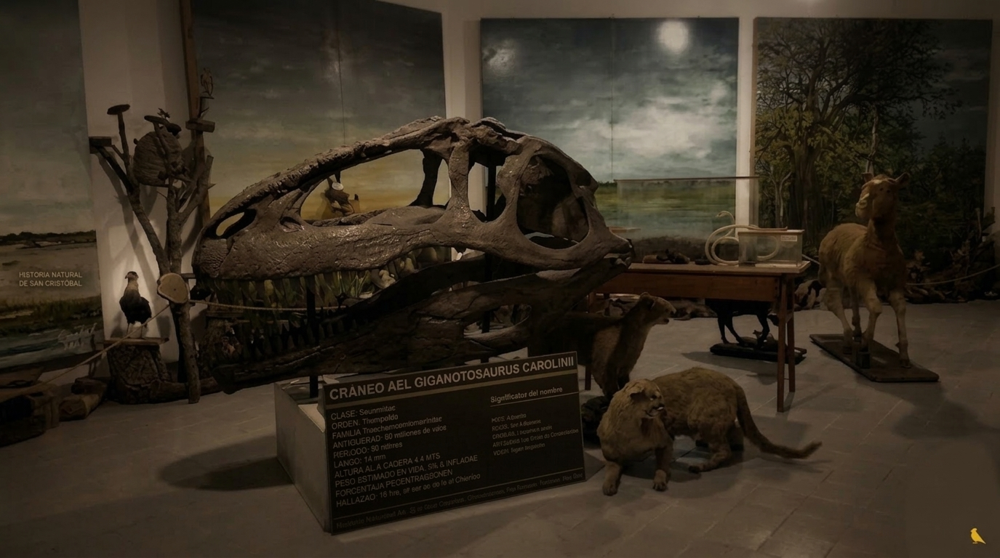

Historia Regional
Arqueología
Herramientas, morteros y vasijas cerámicas pertenecientes a los pueblos originarios que habitaron la región.

Asociación civil sin fines de lucro dedicada a la protección, difusión y conservación de la naturaleza y el ambiente.
Institución fundada el 24 de mayo de 1985 en la ciudad de San Cristóbal, Departamento San Cristóbal, Provincia de Santa Fe.
Escucha nuestros programas de divulgación científica, entrevistas con investigadores y las últimas novedades en directo.
Sigue nuestras últimas publicaciones y novedades compartidas en los perfiles oficiales de Facebook e Instagram.
¡Nuevos contenidos sobre la conservación del Cardenal Amarillo y transmisiones especiales en vivo!
Ver publicación en FacebookExplora las postales de nuestras muestras paleontológicas y actividades educativas en la región.
Ver perfil de InstagramLunes a Viernes: 09:00 - 18:00 hs
Sábados y Domingos: Cerrado
¡Entrada Libre y Gratuita!
Requiere reserva previa de fecha y hora para el recorrido guiado.
Puntualidad: Te sugerimos llegar 10 minutos antes de tu reserva.
Silencio y respeto: Mantén los dispositivos en modo silencioso.
¡Disfruta y cuida nuestro patrimonio!
Sí, se permite la toma de fotografías y videos para uso personal sin el uso de flash ni trípodes, para proteger la preservación de los especímenes y piezas expuestas.
El recorrido guiado tiene una duración aproximada de 45 a 60 minutos. Un guía especializado acompaña a los visitantes por las distintas colecciones explicando los detalles de la biodiversidad regional y la paleontología.
¡Sí! Contamos con recorridos educativos adaptados a todos los niveles escolares (inicial, primario y secundario). Se debe reservar con anticipación seleccionando la opción en nuestro formulario de contacto.
No, la entrada es completamente libre y gratuita. Solo requerimos la reserva previa de fecha y hora para poder organizar los grupos y brindar una mejor experiencia.
No, por razones de conservación y seguridad del patrimonio, está estrictamente prohibido tocar los especímenes, fósiles, vitrinas u objetos expuestos. Contamos con muestras didácticas supervisadas durante los recorridos guiados.
Dirección: H. Irigoyen y Dr. Gerónimo Lassaga
San Cristóbal (CP 3070), Provincia de Santa Fe, Argentina.
Ubicación céntrica y de fácil acceso peatonal desde las avenidas principales de la ciudad.
Entrada accesible adaptada para personas con movilidad reducida y cochecitos.
Reserva tu fecha y hora para el recorrido guiado, o consúltanos sobre eventos especiales y visitas escolares. Escríbenos y responderemos a la brevedad.
museociencia@yahoo.com.ar
+54 03408 15-57-7548